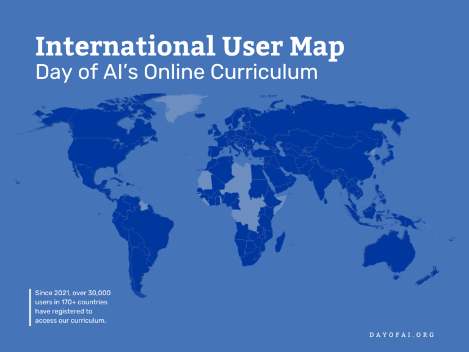

Global Participation
Impact
Day of AI 2024 saw remarkable global engagement, with participants from over 170 countries registering and accessing our curricula. Over 30,000 educators implemented Day of AI activities worldwide, bringing AI education to students across diverse learning environments, including urban schools, remote rural communities, homeschools, and afterschool programs. Educators worldwide translated and adapted the lessons to incorporate local language and relevant materials.
2024 was a year of major international expansion for Day of AI. FPT University helped Day of AI reach 700 teachers and over 10,000 students in Vietnam, including with local translation of curricula. We saw extraordinary growth in India, with over 4,000 teachers delivering Day of AI curricula to more than 130,000 students, and in Latin America, with 9,000 teachers and 450,000 students. Day of AI Australia, an independent spin-off, now has curricula placed in over 300 schools.
Collaboration
We are always looking for collaborators to scale Day of AI’s impact within our growing network of industry, government, and non-profit collaborators. Collaborators engage in key activities, including promoting the Day of AI resources to local schools, providing professional development to teachers, translating and localizing our materials, hosting local Day of AI events, and even contributing new lessons to our curricula.
See and explore how other countries celebrate the Day of AI resources, including examples of approved translations of our course content below.
Please contact us directly (Contact@dayofai.org) if you want to provide additional local resources or support and become an international collaborator.
Bring Day of AI to Your CountryAustralia
Open to students in years 5 — 10 across Australia, Day of AI is an exciting program encouraging your students to develop the skills critical to their future.
Latin America
¡Celebremos el Día de la Inteligencia Artificial! Proporciona el conocimiento y las habilidades necesarias para que tus estudiantes comprendan la IA.
India
The Day of AI India focuses on Grades 3-8, targeting elementary and middle school students, providing them with a unique opportunity to explore the realms of AI and understand its profound impact on their lives.
U.A.E.
يوم الذكاء الاصطناعي هو مبادرة تعليمية تهدف إلى إثارة اهتمام الطلاب بتقنيات الذكاء الاصطناعي وتعزيز التفكير النقدي لتأثير هذه التقنيات على المجتمع. يشمل المنهج على موارد تطوير مهني للمعلمين وتزويدهم بالأنشطة والمواد التعليمية المصممة للفئات العمرية المختلفة.
Philippines
The University of the Philippines National Institute for Science and Mathematics Education Development (UP NISMED) hosted the first-ever Day of AI – Philippines with the theme “Celebrating the Power of Artificial Intelligence”.
Ukraine
Expanding AI literacy among Ukrainian students ensures they are prepared to use educational AI tools as effectively as possible.
Current Day of AI Curriculum Translations
عربي
يوم الذكاء الاصطناعي هو مبادرة تعليمية تهدف إلى إثارة اهتمام الطلاب بتقنيات الذكاء الاصطناعي وتعزيز التفكير النقدي لتأثير هذه التقنيات على المجتمع. يشمل المنهج على موارد تطوير مهني للمعلمين وتزويدهم بالأنشطة والمواد التعليمية المصممة للفئات العمرية المختلفة.
Tiếng Việt
Ngày Trí tuệ nhân tạo (AI) cung cấp chương trình giáo dục toàn diện và các hoạt động cho học sinh ở mọi cấp học.
Português
Dia da Inteligência Artificial (IA) oferece um programa educativo completo e atividades para estudantes de todos os níveis de ensino.
Español
El Día de la Inteligencia Artificial es un programa diseñado para despertar la curiosidad de estudiantes sobre la Inteligencia Artificial.